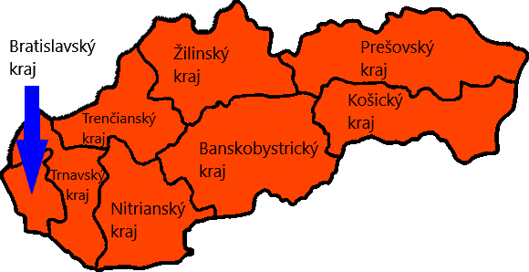
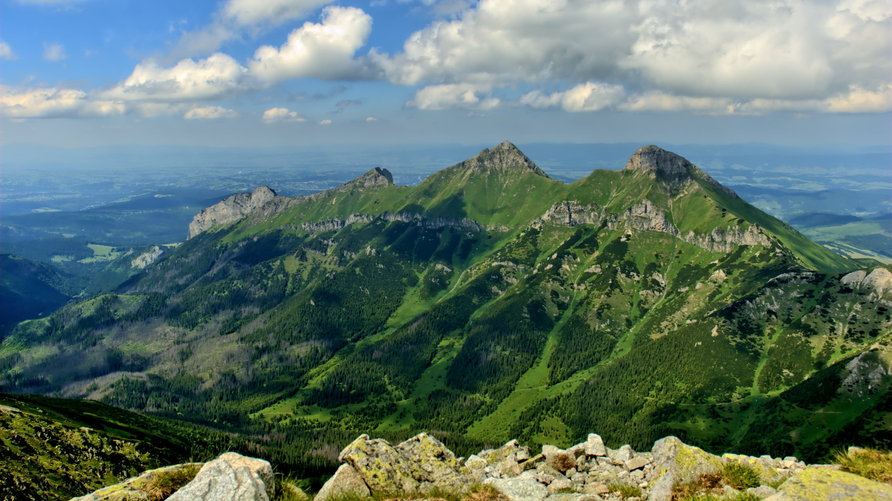
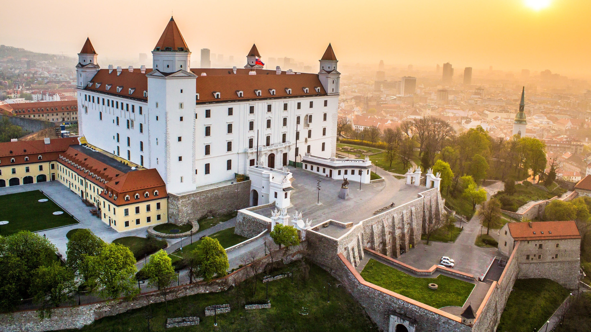
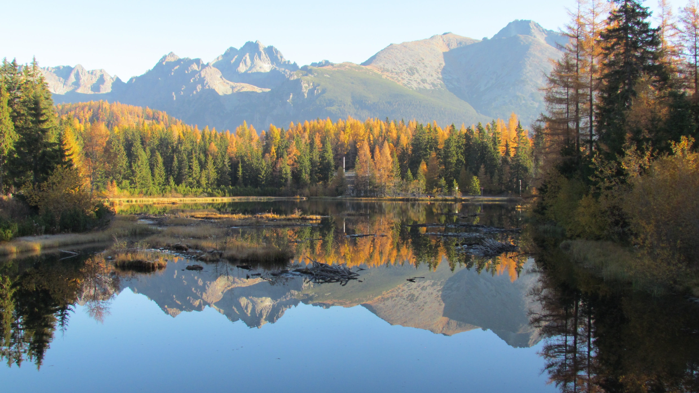

Základní info
Slovensko, plným názvem Slovenská republika, je vnitrozemský stát ležící ve střední Evropě. Na východě sousedí s Ukrajinou, na jihu s Maďarskem, na jihozápadě s Rakouskem, na západě s Českem a na severu s Polskem. V roce 2017 zde žilo 5 441 899 lidí. Hlavním městem je Bratislava, úředním jazykem je slovenština. Slovensko je členem OSN, NATO (od 29. března 2004), OBSE (od 1. ledna 1993), WTO, MMF, Světové banky, Rady Evropy (od 30. června 1993), EU (od 1. května 2004), EEA, Eurozóny (od 1. ledna 2009), Evropské celní unie a Schengenského prostoru (od 21. prosince 2007), OECD, Visegrádské skupiny a jiných mezinárodních struktur.Geografie
Slovensko je vnitrozemský stát nacházející se ve střední Evropě. Celkový rozsah jeho území čítá 49 036 km2. Sousedí na severu s Polskem, na východě s Ukrajinou, na jihu s Maďarskem, na jihozápadě s Rakouskem a na západě s Českem. Severním a středním oblastem Slovenska dominují na především rozsáhlé horské masivy, které jsou součástí Západních Karpat. Ty se dělí na tři části – Vnější, Střední a Vnitřní. Vnější Západní Karpaty se nacházejí na severu a zahrnují Malé Karpaty, Javorníky a Beskydy. Střední Západní Karpaty se skládají z Vysokých a Nízkých Tater. Vnitřní Karpaty postupují dále na jih do Maďarska. Jejich součástí je především Slovenské rudohoří. V západních oblastech převládají spíše kopce. Níže položené oblasti jsou ve velké většině na jihu při hranicích s Maďarskem. Dvě nejvýznamnější z nich představují Podunajská a Východoslovenská nížina. Nejvyšším bodem je Gerlachovský štít ve Vysokých Tatrách, dosahující výšky 2 655 m. Přes 31,9 % půdy se využívá k zemědělské činnosti. Přetrvávajícími ekologickými problémy zůstávají znečištěné ovzduší a kyselé deště. Ačkoliv byl původní lesní porost vážně narušen intenzivním kácením a zemědělskou činností, stále lesy pokrývají více než dvě pětiny povrchu. Národní parky, chráněné krajinné oblasti a další přírodní rezervace spravuje Státní ochrana přírody Slovenské republiky, vytvořená roku 2000. Nejstarší chráněné oblasti byly ustavovány od roku 1895, první národní park byl zřízen o více než 50 let později, roku 1948. V současnosti se na Slovensku nachází 9 národních parků a 14 chráněných krajinných oblastí. V roce 2004 zasáhla Vysoké Tatry větrná smršť, která silně poškodila zdejší lesní porost a způsobila škody v hodnotě několika miliard korun. Jednu z nejvýznamnějších řek protékajících Slovenskem představuje Dunaj, který spolu s Moravou tvoří slovenskou jihozápadní hranici. Nejdelším slovenským vodním tokem je Váh. Mezi další významné řeky patří Hron, Hornád, Bodrog a Poprad. Na Slovensku jsou častá rovněž horská jezera a minerální i termální prameny. Převážná část slovenského státu spadá do černomořského úmoří. Na Slovensku se vyskytují rozličné druhy fauny a flóry. Existuje zde na 29 tisíc druhů živočichů, 11 tisíc druhů rostlin a přes tisíc druhů prvoků. Vedle běžných domácích zvířat žijí ve slovanských národních parcích medvědi, vlci, rysi, divoké kočky, svišti, vydry, kuny, norci a kamzíci (kteří jsou celostátně chránění). V lesích a v nížinách se nacházejí také koroptve, bažanti, divoké husy a kachny. Co se týče rostlinstva, ze stromů převládají v nížinách duby, na úpatích hor buky, ve vyšších polohách smrky a na nejvyšších místech převažuje co do biomů tajga a tundra.
Tabulka
| Ukazatel | Hodnota |
|---|---|
| Rozloha | 49 036 km2 |
| Počet obyvatel | 5 441 899 |
| Hlavní město | Bratislava |
| Úřední jazyk | Slovenština |
| Měna | Euro (€) |
Fotky



- Vyberte obrázek: